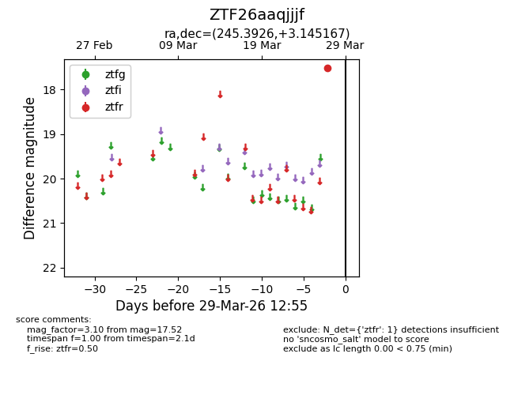
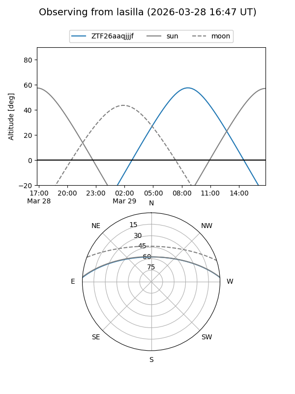
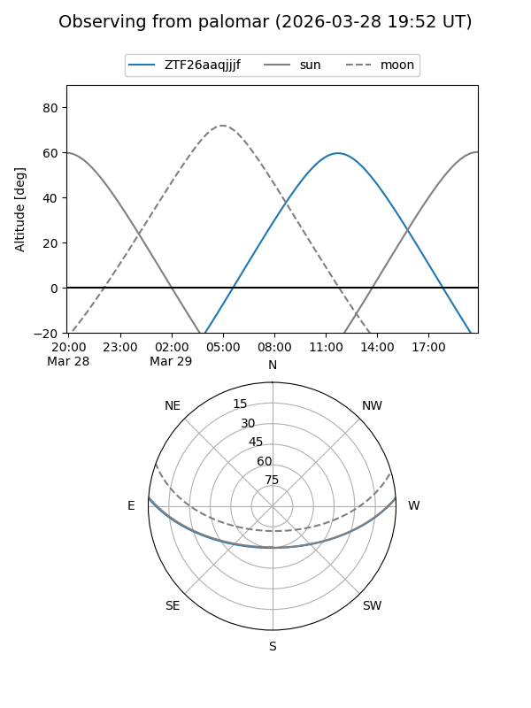

ZTF26aaqjjjf
Target ZTF26aaqjjjf at 2026-03-29 12:58
Aliases and brokers:
FINK: link
Lasair: link
ALeRCE: link
alt names
ZTF26aaqjjjf (ztf,fink_ztf)
Coordinates:
equatorial (ra, dec) = 245.3926,+3.14517
equatorial (HMS+DMS) = 16:21:34.23,+03:08:42.60
galactic (l, b) = (16.8732,+34.44289)
Flags:
Photometry:
last ztfr=17.52
1 ztfr detections
Lightcurve

Visibility


Additional plots